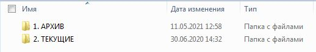
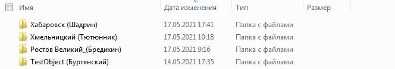

Сруктура папки "0. ОБЪЕКТЫ"
Содержание
Общие сведения о папке
Папка с архивом объектов расположена по адресу: H:\Отделы\ОТО\object (OTONEW)\ОБОРУДОВАНИЕ ЭКОПОЛИМЕР\0. ОБЪЕКТЫ  Рисунок 1 - структура папок внутреннего каталога1. АРХИВ
запись
В данной папке содержаться папки всех объектов, по которым делали предложения на оборудования или выполняли проекты с применение нашего оборудования.
2. ТЕКУЩИЕ
запись
Данные папки содержат информацию необходимую для формирования расчетов по оборудованию. (Эти папки только для чтения)
Создание новых папок объектов
При поступлении задачи для объекта который ранее не прорабатывался (папки с названием объекта нет в папке "1. Архив") необходимо в папке "1. Архив" создать папку объекта. Для создания папки объекта необходимо использовать шаблон папки "0. ШАБЛОН" находящийся в папке "1. Архив"
Название папки объекта должно соответствовать следующему шаблону: "Название объекта (Фамилия менеджера объекта)", пример приведен на Рисунке 2. Вся последующая внутренняя структура папки должна соответствовать шаблону.
 Рисунок 2 - название папок объектовДобавление папок из "1. АРХИВ" в "2. ТЕКУЩИЕ"
Для удобства поиска ссылка на папку объекта может быть вынесена в специальную папку "2. Текущие", это позволяет максимально быстро получить доступ к папкам выполняемых на данный момент объектов. По завершению работы с объектом ссылка на папку удаляется.